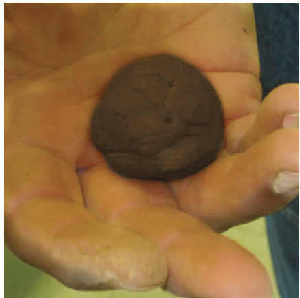

| Parameter | Soil types | |||
|---|---|---|---|---|
| Sandy | Silty | Clayey | Loamy | |
| Cropping suitability | Best for drought-tolerant crops | Best for crops that can tolerate a bit of wetness | Best for crops that can tolerate wetness | Suitable for a wide range of crops |
Source: EOS Data Analytics. (2022). https://eos.com/blog/types-of-soil/
Determination of soil texture:
Soil texture can be determined using laboratory analysis or simple methods which can be easily carried out in the field such as texture by feeling method. Normally, laboratory analyses of soil texture are costly and take time, while feeling soil texture by hand is cheap, quick, and accurate. Soils are divided into three broad texture groups: coarse-textured soils, medium-textured soils, and fine-textured soils. The term coarse-textured is often used for soils that are dominated by sand. Fine-textured soils refer to soils that are dominated by clay, and medium-textured soils are a more balanced mixture of sand, silt, and clay particles. The medium-textured soils are also termed as loam soils.
Determination of soil texture by feel method:
This method is used to determine the textural class of soil in the field by simple field tests and feeling the constituents of the soil. The soil sample must be in a state between moist to slightly wet. Gravel and other constituents greater than 2 mm in diameter must be removed.
Procedure for determining soil texture by feel method
Step 1: Take a handful of soil. If the soil is dry, moisten it just enough to determine if it will form a ball when squeezed in the palm (refer to Figure 2.4) go to step 2. If the moist soil does not form a ball, it is sand.

Step 2: Bounce the ball: If the moist soil remains in a ball when the hand is opened, bounce the ball in the hand. If the ball breaks when it hits the hand, it is a loamy sand. If the ball does not break, move on to step 3.